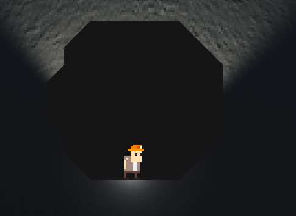

Subterra was the semester long project for the CS3383: Software Engineering class.
As the software engineer for my team, I was responsible for:

This image links to the SubTerra GitHub repository where you can find the source code.
MuncherMuncher was a game made for the GDU & ACM Club(s) Game Jam 6 in Spring 2026.
Solo designed, developed, and published a copmplete playable game in 48 hours.
In ENGL3170 class I wrote a white paper comparing two websites/software against each other in terms of their usability.
In my white paper I compared the game engines Unity and Godot.
This project allowed me to build my skills in: